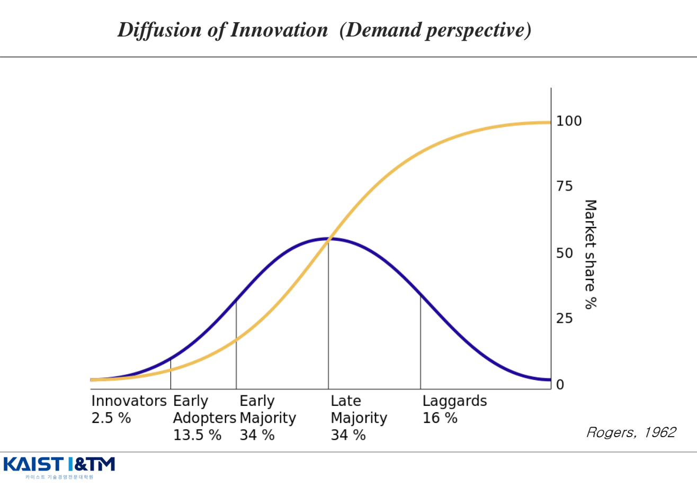
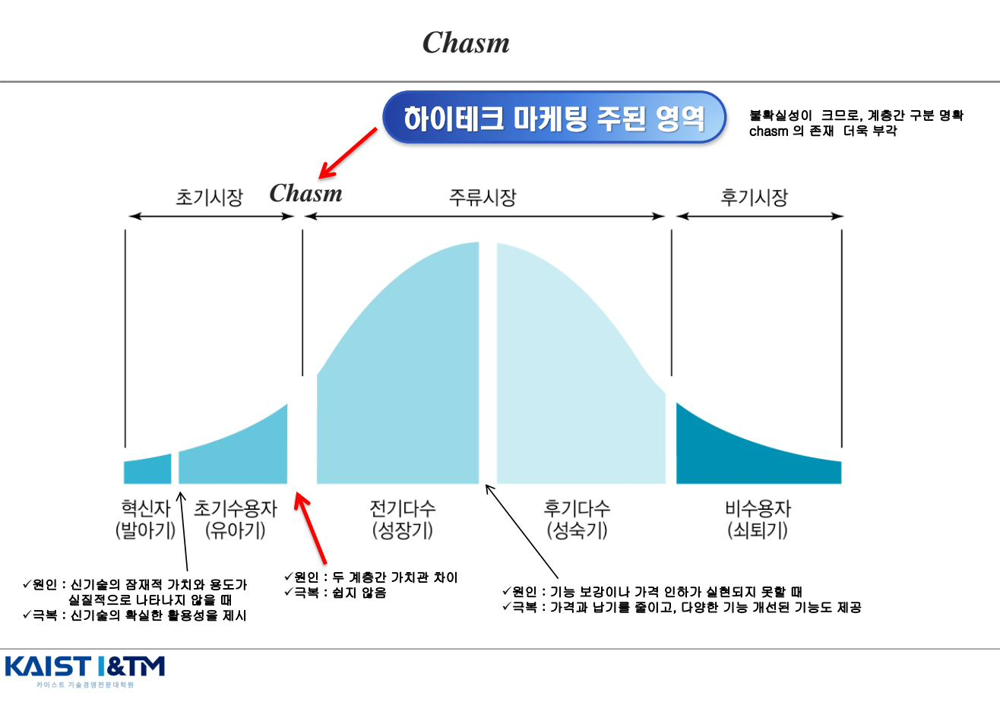
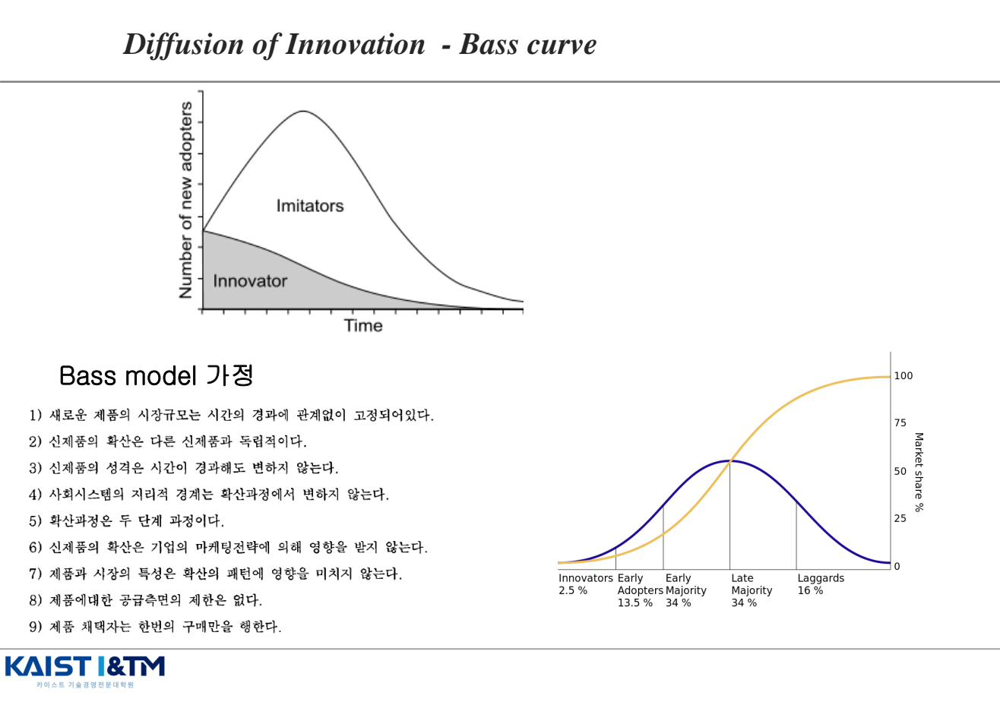
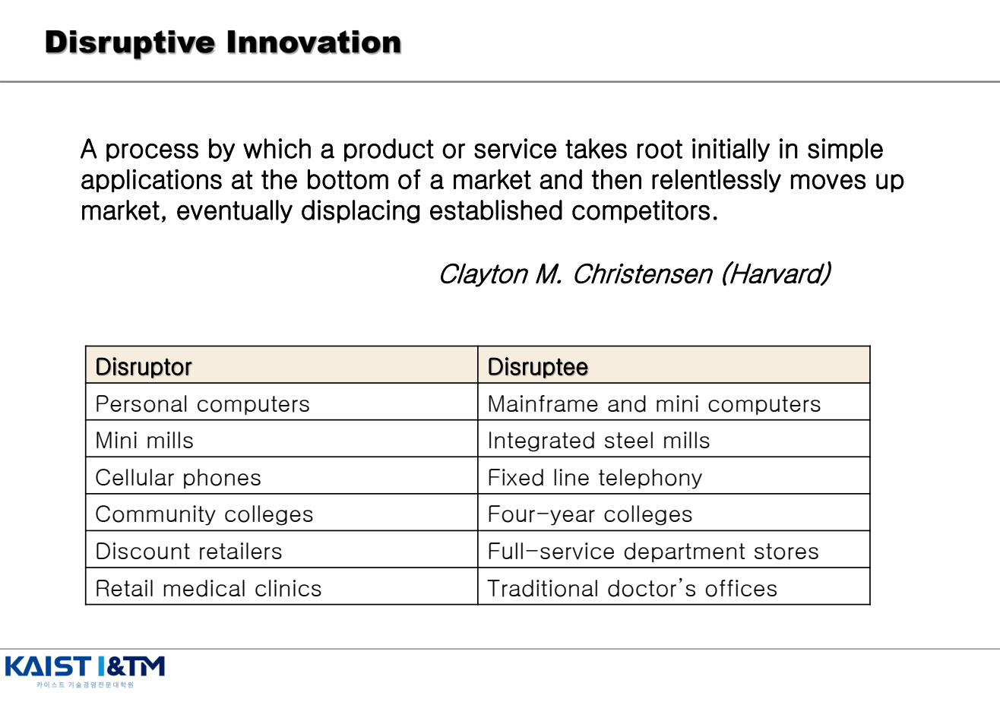
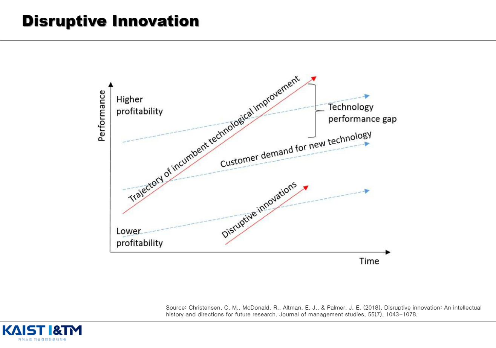
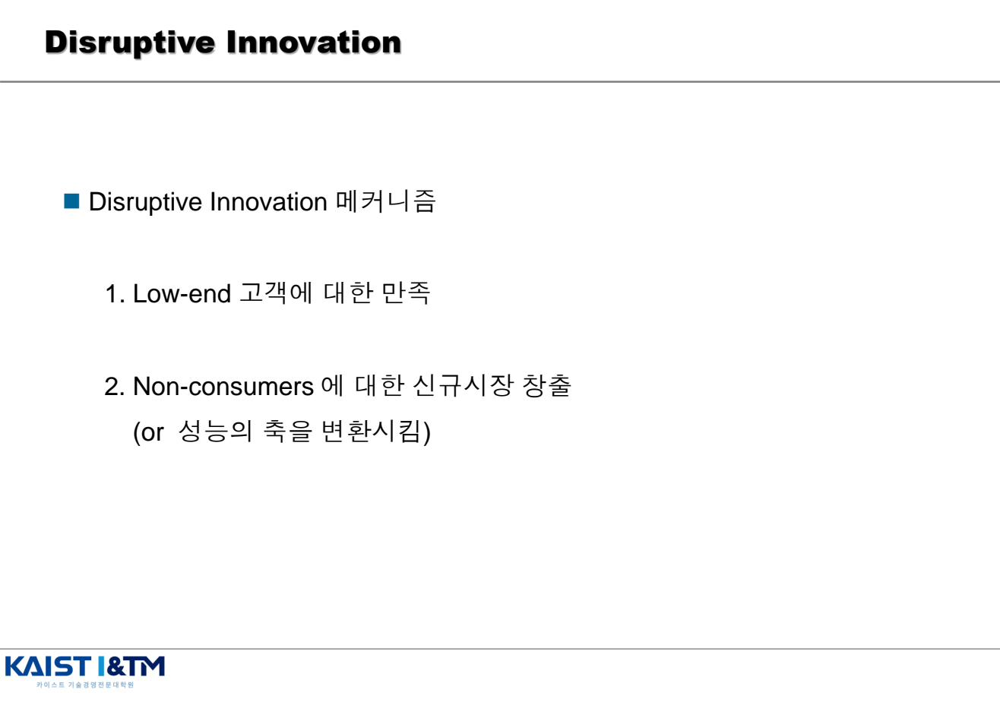
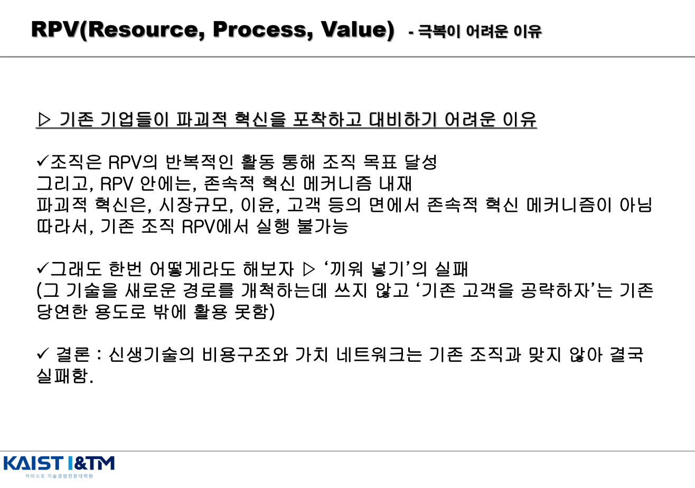

Diffusion & Disruptive Innovation · 확산과 파괴적 혁신
앞 챕터들이 공급 관점(Supply perspective)이었다면 — "기업이 무엇을 하는가" — 이번 챕터는 수요 관점(Demand perspective)이다. 혁신이 시장과 사회에 어떻게 퍼지고, 누가 받아들이며, 왜 받아들이지 않는가. Rogers의 확산 5계층, Moore의 캐즘, Bass 모델까지가 확산 이론이고, 후반부는 혁신 관리에서 가장 중요한 이론 중 하나인 Christensen의 파괴적 혁신(Disruptive Innovation)을 다룬다.
학습 개요
- Rogers 확산이론: Innovators(2.5%) / Early Adopters(13.5%) / Early Majority(34%) / Late Majority(34%) / Laggards(16%)
- Chasm(캐즘): Early Adopters와 Early Majority 사이의 단절
- Bass curve와 9가지 모델 가정
- Christensen 파괴적 혁신 vs 존속적 혁신의 차이와 메커니즘
- RPV (Resource · Process · Value): 기존 기업이 파괴적 혁신에 대응하지 못하는 이유
- Low-end 거점 vs New-market 거점 파괴적 혁신의 두 시작점
1. Rogers의 혁신 확산 이론 (1962) EXAM
Everett Rogers가 Diffusion of Innovations(1962)에서 정립한 이론. "어떤 기술혁신이 사회 시스템 내의 구성원 간에 시간에 따라 특정 채널들을 통하여 전파되는 과정"으로 확산을 정의했다.

5가지 채택자 계층 (Adopter Categories)
| 계층 | 비율 | 특징 |
|---|---|---|
| Innovators (혁신자) | 2.5% | 새로운 기술이 나오면 무조건 받아들이는 계층. 문제·불편이 있어도 불평하지 않음 |
| Early Adopters (선구자) | 13.5% | 신기술의 진가를 알아차리고 경제적 이익·전략적 가치를 높이 사는 계층. 분석할 줄 아는 계층 |
| Early Majority (전기 다수) | 34% | 실용적 구매 계층. 기본적으로 첨단 기술에 관심은 있으나 모험을 하고자 하지 않으며, 신기술이 성숙될 때까지 기다림 |
| Late Majority (후기 다수) | 34% | 첨단 기술에 부정적인 시각. 신기술이 업계의 표준으로 인정받지 못하면 이를 도입하지 않음 |
| Laggards (지각자) | 16% | 신기술을 활용하지만 기술의 존재나 이용 방법 등을 알지 못하는 계층 |
외워두면 좋은 비율
2.5 · 13.5 · 34 · 34 · 16 — 정규분포의 누적 비율을 떠올리면 됨. 합이 100%. 시험에서 "각 계층의 비율과 특징을 쓰시오" 형태로 자주 출제된다.
2. Chasm (캐즘) — Geoffrey Moore
Geoffrey Moore가 Crossing the Chasm(1991)에서 제시한 개념. Rogers의 곡선에는 보이지 않는 치명적 단절이 존재한다는 발견이다. Early Adopters와 Early Majority 사이에 깊은 골(chasm)이 있어, 많은 신기술이 여기에서 좌초한다.

각 단계의 단절과 그 원인
| 단절 위치 | 발생 원인 | 극복 방법 |
|---|---|---|
| 혁신자 ↔ 초기수용자 | 신기술의 잠재적 가치와 용도가 실질적으로 나타나지 않을 때 | 신기술의 확실한 활용성을 제시 |
| 초기수용자 ↔ 전기다수 (Chasm) | 두 계층 간 가치관 차이 — 선구자는 비전과 가능성을 보고, 실용주의자는 검증된 솔루션과 레퍼런스를 본다 | 쉽지 않음. 완전제품(whole product), 레퍼런스, 표준화, 보완재 등으로 극복 |
| 전기다수 ↔ 후기다수 | 기능 보강이나 가격 인하가 실현되지 못할 때 | 가격·납기 단축, 다양한 기능 개선 |
Chasm을 건너기 위한 핵심 원칙
- 완전제품(Whole Product)이 성공의 결정적 요소
- 하이테크 기업은 주류 시장에 자리잡기 전까지는 자신을 증명한 것이 아니다 — 초기 시장의 성공만으로는 부족
- 특정 niche를 깊이 공략하여 거점을 마련한 후 인접 시장으로 확장
3. Bass Curve와 9가지 모델 가정 EXAM
Frank Bass(1969)의 모델. 확산 과정을 혁신자(Innovator)와 모방자(Imitator)의 두 흐름으로 단순화하여 수학적으로 표현한 모델이다.

Bass 모델의 핵심 — 두 가지 채택 경로
- 외부 영향(Innovation Effect): 매스미디어·광고 등 외부에서의 영향으로 채택. Innovator층이 여기에 해당
- 내부 영향(Imitation Effect): 이미 채택한 사람들과의 상호작용(word-of-mouth)으로 채택. Imitator층이 여기에 해당
Bass 모델의 9가지 가정
- 새로운 제품의 시장규모는 시간의 경과에 관계없이 고정되어 있다
- 신제품의 확산은 다른 신제품과 독립적이다
- 신제품의 성격은 시간이 경과해도 변하지 않는다
- 사회 시스템의 지리적 경계는 확산 과정에서 변하지 않는다
- 확산 과정은 두 단계 과정이다 (Innovation effect + Imitation effect)
- 신제품의 확산은 기업의 마케팅 전략에 의해 영향을 받지 않는다
- 제품과 시장의 특성은 확산 패턴에 영향을 미치지 않는다
- 제품에 대한 공급 측면의 제한은 없다
- 제품 채택자는 한 번의 구매만을 행한다
Bass 모델 가정의 의의와 한계
9가지 가정 모두가 강한 단순화다. 그래서 실제 적용 시 한계가 분명하다. (예: 마케팅 영향이 없다는 가정은 비현실적). 시험에서는 "Bass 모델의 가정을 비판적으로 평가하시오" 같은 변형 출제도 가능.
4. Christensen의 파괴적 혁신 (Disruptive Innovation) EXAM
Clayton Christensen이 The Innovator's Dilemma(1997)에서 정립한 이론. 지난 30년간 혁신 경영에 가장 큰 영향을 준 이론 중 하나로, "왜 잘 나가던 기업이 무너지는가"라는 질문에 답한다.
4.1 파괴적 혁신의 정의

"A process by which a product or service takes root initially in simple applications at the bottom of a market and then relentlessly moves up market, eventually displacing established competitors."
즉, 시장의 하단(또는 비소비자 영역)에서 단순한 응용으로 시작하여, 점차 상위 시장으로 거침없이 이동해 결국 기존 경쟁자를 대체하는 과정.
4.2 존속적 혁신 vs 파괴적 혁신

| Sustaining Innovation (존속적) | Disruptive Innovation (파괴적) | |
|---|---|---|
| 대상 고객 | 기존 주류 고객 (incumbent's existing customers) | Low-end 고객 또는 비소비자(non-consumer) |
| 제품 평가 | 기존 성능 축에서 더 좋은 제품 | 기존 성능 축에서는 처음에 저급(inferior)으로 간주됨 |
| 주된 성능 | 점진적·급진적 성능 개선 | 다른 차원의 성능 (예: 저가, 사용 편의성, 휴대성) |
| 가격 | 주류 또는 프리미엄 | 저가 |
| 주요 추진 주체 | 기존 기업 | 신생 기업 (disrupter) |
| 예시 | 고성능 데스크톱, 4K TV, 최신 카메라 | Wii(저성능·저가·쉬운 게임), 트랜지스터 라디오, 미니컴퓨터, Netflix |
4.3 파괴적 혁신의 메커니즘 — 두 가지 시작점

- Low-end 거점: 기존 기업들은 수익 창출이 작은 low-end 시장을 간과(over-served customers). Disrupter들은 처음에는 이 시장에서 적정한 제품을 공급
- New-market 거점: Disrupter들은 아무 기업도 존재하지 않는 시장을 만듦. 즉, 비소비자(non-consumer)들을 소비자로 만드는 방법을 찾음
4.4 파괴적 혁신의 3가지 특성
- 수요에 기반한 기술 변화 — 새 기술이 새 수요를 만나면 일어남
- 점진적 혁신의 중요성 — 파괴적 혁신도 처음에는 단순하지만 점진적으로 성능을 끌어올림
- 신시장 와해 — 가치 네트워크(Value network) 기반 혁신 — Non-consumer, 성능 축 변화 (Dimension을 달리하는 네트워크 구조)
5. RPV — 왜 기존 기업은 파괴적 혁신에 대응하지 못하는가 EXAM
Christensen이 제시한 핵심 분석 도구. Resources, Processes, Values의 약자다. 조직이 무엇을 할 수 있고 무엇을 할 수 없는지를 결정하는 3요소.

RPV의 3요소
| 요소 | 의미 |
|---|---|
| R · Resources (자원) | 사람, 자본, 기술, 브랜드, 제품, 정보, 공급망 등 — 자원은 비교적 유연하게 이동 가능 |
| P · Processes (프로세스) | 자원을 가치로 변환하는 패턴 — 의사결정, 개발, 제조, 채용 등의 반복적 활동 |
| V · Values (가치 기준) | 조직의 우선순위 — 어떤 고객·매출·이익을 중요하게 여길지 결정하는 기준 |
기존 기업이 파괴적 혁신에 대응하지 못하는 이유
- 조직은 RPV의 반복적인 활동을 통해 조직 목표를 달성
- RPV 안에는 존속적 혁신 메커니즘이 내재되어 있음
- 파괴적 혁신은 시장 규모·이윤·고객 등의 면에서 존속적 혁신 메커니즘이 아님
- 따라서 기존 조직의 RPV에서 실행 불가능
📌 "끼워넣기"의 실패
기존 조직이 "그래도 한 번 어떻게라도 해보자" 하면 발생하는 패턴 — 새로운 파괴적 기술을 새로운 경로 개척에 쓰지 않고 "기존 고객을 공략하자"는 기존 당연한 용도로밖에 활용 못 함. 결국 신생 기술의 비용구조와 가치 네트워크는 기존 조직과 맞지 않아 실패.
해결책 — 별도 조직 운영
Christensen의 처방: 파괴적 혁신을 추진하려면 독립된 조직(separate organization)에서 추진해야 한다. 그 조직은 그 시장에 맞는 RPV를 새로 형성하기 때문이다 (예: IBM의 PC 사업부, GM의 새턴).
6. Disruptive Innovation 재고찰 (Christensen, 2015)
Christensen, Raynor, McDonald(2015) HBR 논문에서 자기 이론을 재고찰. 핵심은 "Disruptive Innovation 개념이 너무 남용되고 있다"는 것.
Uber는 disruptive innovation인가?
- Uber의 모바일 앱은 자동차를 타고자 하는 소비자를 운전자와 연결
- 그러나 disruptive innovation은 low-end 또는 new market(non-consumer 공략)을 거점으로 발생
- Uber는 처음부터 기존 택시의 주류 고객을 공략 → sustaining innovation에 가까움
- 다만, 리무진·black car 사업 입장에서는 disruptive 성격을 가짐
핵심 메시지
"기존 기업이 무너지고 망하는 경우를 모두 disruptive innovation으로 설명하려고 해서는 안 됨". Disruption은 자원을 더 적게 가진 작은 기업이 이미 자리잡은 기존 기업에 성공적으로 대적하는 시간을 갖는 과정(Not 제품, 서비스)이다.
예상 문제 매칭
📌 Rogers 확산 5계층
"Rogers의 혁신 확산 이론 5계층을 비율과 특징을 포함하여 설명하시오."
답안 핵심: Innovators(2.5%) → Early Adopters(13.5%) → Early Majority(34%) → Late Majority(34%) → Laggards(16%). 각 계층의 가치관·구매 동기·표준 의존성.
📌 Chasm
"Moore의 Chasm 이론을 설명하고, 캐즘 발생 원인과 극복 방안을 서술하시오."
답안 핵심: Early Adopters ↔ Early Majority 사이의 가치관 차이 → 비전 추구 vs 검증된 솔루션 추구. 극복: 완전제품, niche 집중, 레퍼런스 확보.
📌 Bass 모델
"Bass 확산 모델의 핵심 구조와 9가지 가정을 설명하시오."
답안 핵심: Innovator(외부영향) + Imitator(내부영향) 두 흐름. 9가지 가정: 시장규모 고정, 독립성, 성격 불변, 지리 불변, 두 단계, 마케팅 영향 없음, 제품·시장 특성 영향 없음, 공급 제한 없음, 한 번 구매.
📌 파괴적 혁신 vs 존속적 혁신 (핵심 빈출)
"Christensen의 파괴적 혁신과 존속적 혁신을 비교 설명하고, 파괴적 혁신의 두 가지 시작점(low-end vs new-market)을 사례와 함께 서술하시오."
답안 핵심:
- 존속: 주류 고객 + 기존 성능 축 + 더 좋은 제품 / 파괴: low-end 또는 비소비자 + 다른 성능 축 + 초기엔 저급
- 두 시작점: Low-end 거점(과잉 성능 시장의 간과된 영역) + New-market 거점(비소비자를 소비자로)
- 3가지 특성: 수요 기반 기술변화 / 점진적 혁신의 중요성 / 가치 네트워크 기반
- 사례: Wii, 트랜지스터 라디오, 미니컴퓨터, Netflix
📌 RPV — 끼워넣기의 실패 (핵심 빈출)
"RPV (Resources, Processes, Values) 프레임워크를 설명하고, 기존 기업이 파괴적 혁신에 대응하기 어려운 이유를 서술하시오."
답안 핵심: RPV 정의 → 조직은 RPV 반복 활동으로 목표 달성 → RPV에 존속적 혁신 메커니즘 내재 → 파괴적 혁신은 시장규모·이윤·고객이 다름 → 기존 RPV로 실행 불가 → "끼워넣기"의 실패 → 별도 조직 운영이 해결책.
📌 Disruptive Innovation 재고찰 (심화)
"Uber가 disruptive innovation인지 Christensen 이론에 기반하여 분석하시오."
답안 핵심: Disruption은 low-end 또는 non-consumer 거점에서 시작 → Uber는 기존 택시 주류 고객을 공략 → sustaining에 가까움. 다만 리무진·black car에는 disruptive 성격. "기존 기업의 실패를 모두 disruption으로 부르지 말 것".
※ 이 페이지의 모든 그림은 강의자료 IM07_Diffusion_Disruptive.pdf에서 발췌한 것이며, 학습 목적으로만 사용된다.